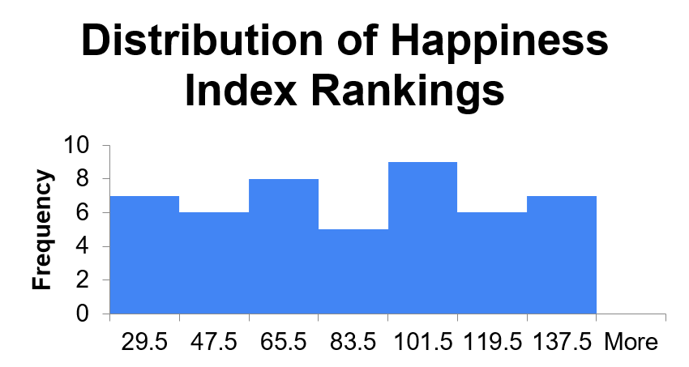
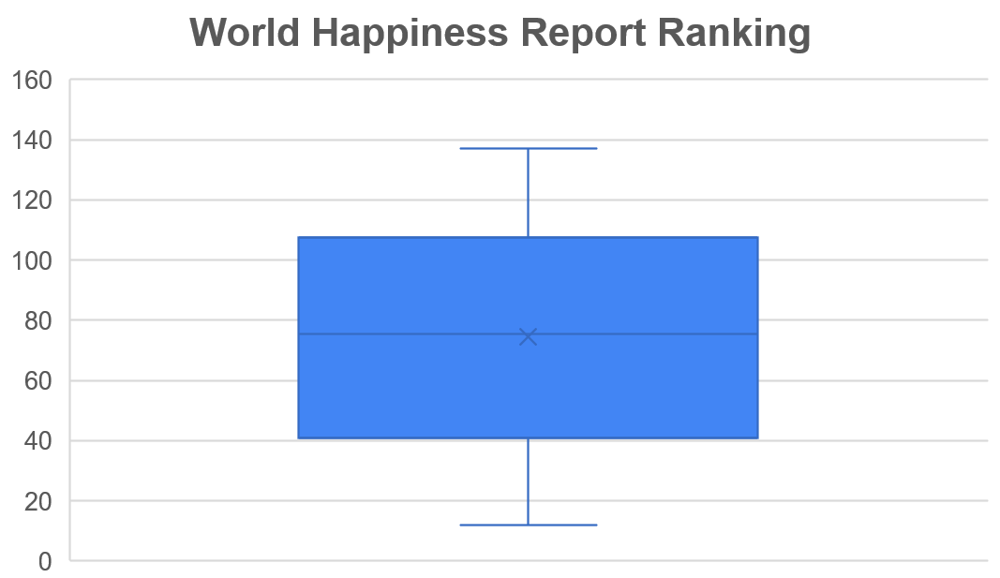
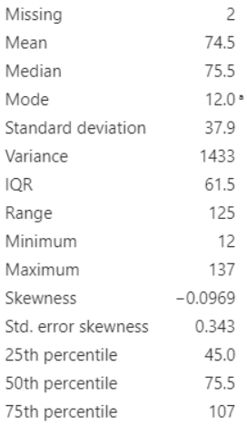
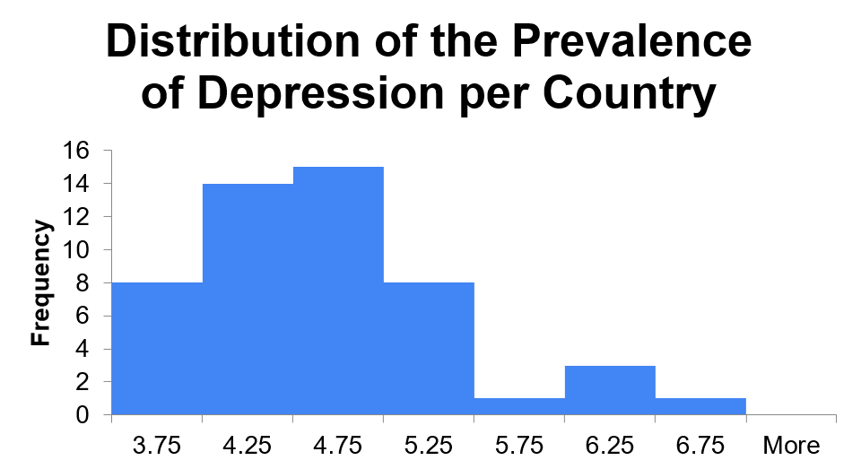
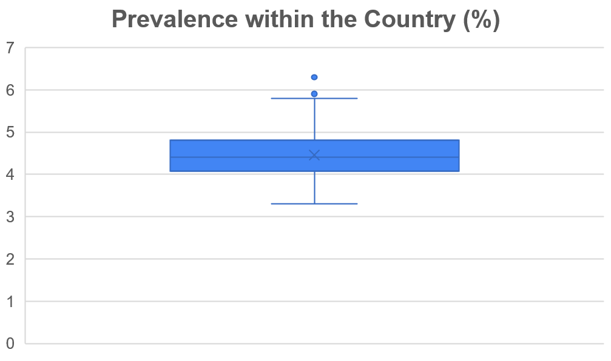
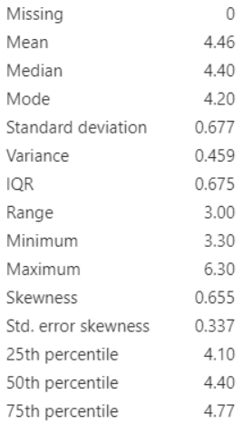

STATISTICS!
Quantitative Variables /Click Links to Navigate Variables/
Happines Index Rating
One of the first quantitative variables we wil be discussing is Happiness Index Rating. Happiness Index Rating ranks 137 countries based on hapinness. It is ranked decreasingly, from rank 1 to 137.
Standard Deviation: Descriptive StatisticsThe mean of the data set is 74.5, The median is 75.5, and the standard deviation is 37.9. Mean is the most appropriate measure of centre as the distribution is almost symmetrical or evenly split. We can also observe that there are no outliers within the data. The standard deviation is also relatively high which means there are a large difference between the each ranking from the highest of 12 and the lowest of 137.
The skewness of the distribution is -0.0969. And the IQR is 61.5. There are also no observable outliers. The graph also shows that 50% of the countries in this sample rank 45 to 107 on the happiness index ranking.
  Prevalence
The second quantitative variable we wil be discussing is Prevalence. Prevalence, in simple terms, is the size of people with depression cases in a population.
Standard Deviation: The mean is 4.46%, the median is 4.4% and the standard deviation is 0.677%. Just like data sets prior, the shape of this data set is skewed and therefore median will be once again the most appropriate. This means the average prevalence of depression within a country from the sample is 4.4%. The standard deviation is fairly low at only 0.667% which means any outliers are significant, of which we have 2 outliers when looking at the box plot.
The skewness is 0.655 and the IQR is 0.675. We can see that the distribution is positively skewed. And that there are two outliers. The graph also shows that 50% or 25 of the countries in this list are fairly clumped together and have a prevalence between 4.1% and 4.775%.
  